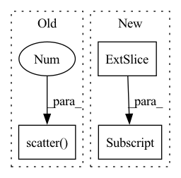

Pattern ID :13540
Before Change
// scatter back
topk_freqs = torch.zeros_like(freqs).scatter(1 , topk_amp_indices, freqs)
// inverse fft
return torch.fft.irfft(topk_freqs, dim = 1)After Change
// mask out all freqs with lower amplitudes than the lowest value of the topk above
topk_freqs = freqs.masked_fill(amp < topk_amp[:, -1:] , 0.+0.j)
// inverse fft
In pattern: SUPERPATTERN
Frequency: 3
Non-data size: 3
Instances Fragment ID: 45594209
Project Name: lucidrains/etsformer-pytorch
Commit Name: 51d66b49094c957fbb434bded061e0dca1dc4792
Time: 2022-03-15
Author: lucidrains@gmail.com
File Name: etsformer_pytorch/etsformer_pytorch.py
M Class Name: FrequencyAttention
N Class Name: FrequencyAttention
M Method Name: forward(2)
N Method Name: forward(2)
M Parent Class: nn.Module
N Parent Class: nn.Module
M File Name: etsformer_pytorch/etsformer_pytorch.py
N File Name: etsformer_pytorch/etsformer_pytorch.py
M Start Line: 187
M End Line: 200
N Start Line: 187
N End Line: 200
Before Change
self.zero_cache = zeros
self.idxs_cache = index
expanded = torch.scatter( zeros, 1 , index, x)
// expanded = torch.index_select(x, 1, self.select_idxs)
return expanded + self.bf[:, None, None].expand_as(expanded)
After Change
def forward(self, x):
x = super().forward(x)
x = pad(x, (0, 0, 0, 0, 0, 1))
expanded = x[:, self.select_idxs]
// zeros = self.zero_cache
// index = self.idxs_cache
// if zeros.shape[0] != x.shape[0]: Fragment ID: 45594207
Project Name: eidoslab/simplify
Commit Name: 20f2d560394960f91d131408660f14299acf9c1d
Time: 2021-07-08
Author: carlo.alberto.barbano@outlook.com
File Name: simplify/layers.py
M Class Name: BatchNormExpand
N Class Name: BatchNormExpand
M Method Name: forward(2)
N Method Name: forward(2)
M Parent Class: nn.BatchNorm2d
N Parent Class: nn.BatchNorm2d
M File Name: simplify/layers.py
N File Name: simplify/layers.py
M Start Line: 106
M End Line: 118
N Start Line: 108
N End Line: 110
Before Change
self.zero_cache = zeros
self.idxs_cache = index
expanded = torch.scatter( zeros, 1 , index, x)
// expanded = torch.index_select(x, 1, self.select_idxs)
return expanded + self.bf if self.use_bf else expanded
After Change
def forward(self, x):
x = super().forward(x)
x = pad(x, (0, 0, 0, 0, 0, 1))
expanded = x[:, self.select_idxs]
// zeros = self.zero_cache
// index = self.idxs_cache
// if zeros.shape[0] != x.shape[0]: Fragment ID: 45594205
Project Name: eidoslab/simplify
Commit Name: 20f2d560394960f91d131408660f14299acf9c1d
Time: 2021-07-08
Author: carlo.alberto.barbano@outlook.com
File Name: simplify/layers.py
M Class Name: ConvExpand
N Class Name: ConvExpand
M Method Name: forward(2)
N Method Name: forward(2)
M Parent Class: nn.Conv2d
N Parent Class: nn.Conv2d
M File Name: simplify/layers.py
N File Name: simplify/layers.py
M Start Line: 48
M End Line: 60
N Start Line: 49
N End Line: 51